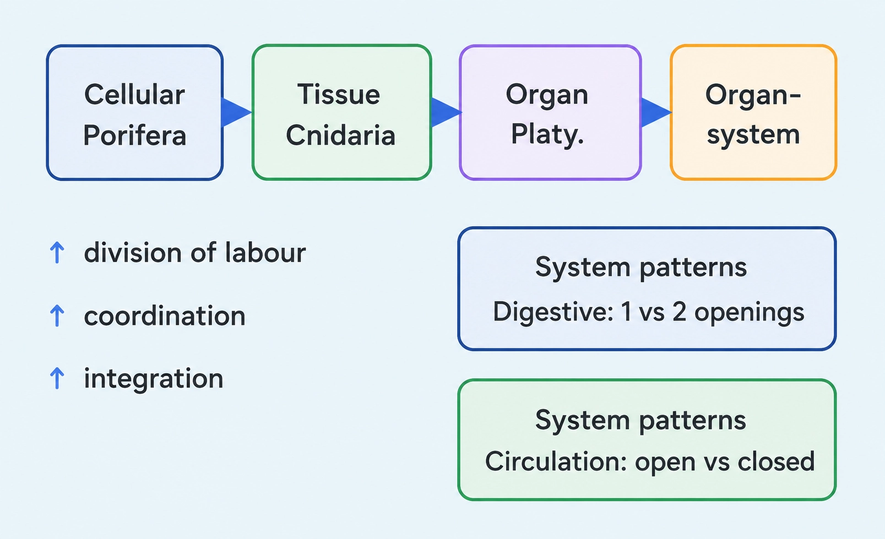
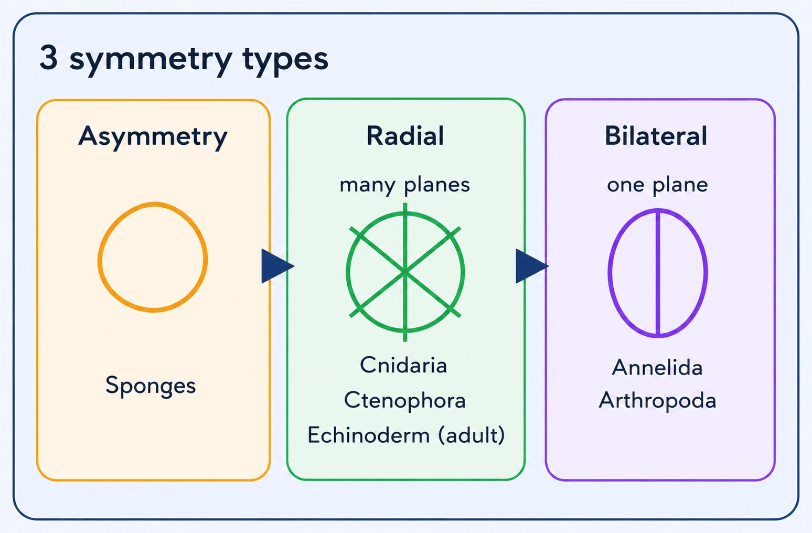
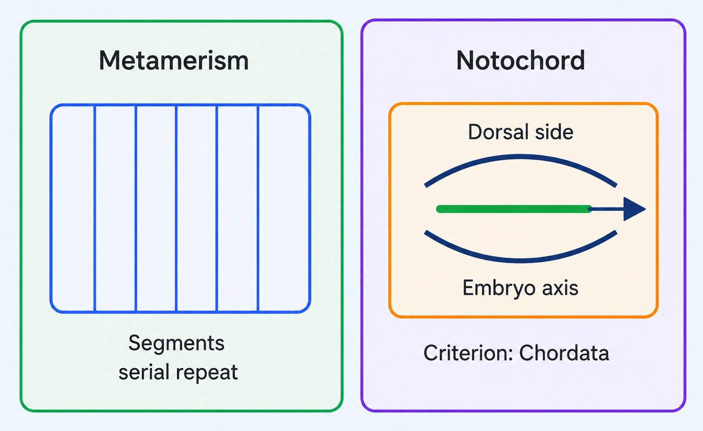
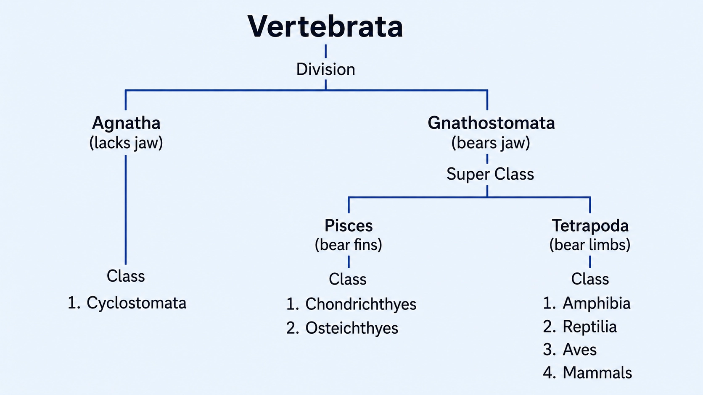

Class 11 · Biology
ANIMAL KINGDOM
Why we classify animals & the key features used to group Animalia
BASIS OF CLASSIFICATION (ANIMAL KINGDOM)
📖Definition & Introduction
- Animal classification groups animals using shared fundamental structural features to show natural relationships.
- Needed because Animalia has over a million species described till now with huge diversity in form and organisation.
- Helps in easy study, identification, and predicting characters from the group (diagnostic traits).
- Helps in assigning a systematic position to a newly described species using its characters.
- Basis features include levels of organisation, symmetry, coelom, segmentation and notochord.
🖼️Diagram
🎯Key Concepts
- 🧫Levels of organisation: cellular → tissue → organ → organ-system.
- 🪞Body symmetry: asymmetrical, radial, or bilateral (depends on body plan/stage).
- 🫧Coelom: body cavity lined by mesoderm; absent/pseudo/true coelom separates major groups.
- 🧩Segmentation (metamerism): serial repetition of body segments and at least some organs.
- 🦴Notochord: dorsal mesodermal rod in embryo; present in chordates, absent in non-chordates.
🔎LEVELS OF ORGANISATION (ARRANGEMENT OF CELLS)
- Cellular level: loose cell aggregates; some division of labour (Porifera).
- Tissue level: cells form tissues (Cnidaria/Coelenterata, Ctenophora).
- Organ level: tissues form organs with specific functions (Platyhelminthes).
- Organ-system level: organs work as systems (Annelida, Arthropoda, Mollusca, Echinodermata, Chordata).
- Digestive system: incomplete (single opening) vs complete (mouth + anus).
⚙️OTHER FUNDAMENTAL FEATURES (USED ACROSS PHYLA)
- Symmetry: asymmetrical (no plane) vs radial (many planes) vs bilateral (one plane).
- Coelom: acoelomate (absent) vs pseudocoelomate (not mesoderm-lined) vs coelomate (true coelom).
- Segmentation: metameric repetition; classic example earthworm.
- Notochord: dorsal rod in embryo; defines Chordata vs Non-chordata.
⚖️COELOM-BASED CLASSIFICATION
| Basis | Acoelomate | Pseudocoelomate | Coelomate |
|---|---|---|---|
| Body cavity | Absent | Present but not mesoderm-lined | True coelom present |
| Mesoderm lining | No cavity to line | Absent; mesoderm present as scattered pouches | Present around the cavity |
| Typical phylum (NEET/JEE) | Platyhelminthes | Aschelminthes (roundworms; largely Nematoda) | Annelida, Arthropoda, Mollusca, Echinodermata, Hemichordata, Chordata |
✏️Solved Q&A
1
A specimen shows bilateral symmetry, triploblastic body plan, and a pseudocoelom. Which major group does it most likely belong to, and which single feature supports this best?
Answer:
Bilateral symmetry and triploblasty occur in many phyla; focus on coelom type.
Pseudocoelom (body cavity not lined by mesoderm) is characteristic of Aschelminthes in NCERT.
Therefore, the best supporting single feature is the pseudocoelom.
Bilateral symmetry and triploblasty occur in many phyla; focus on coelom type.
Pseudocoelom (body cavity not lined by mesoderm) is characteristic of Aschelminthes in NCERT.
Therefore, the best supporting single feature is the pseudocoelom.
✓ Aschelminthes (roundworms); best supporting feature: pseudocoelom.
2
Why is classification essential for giving a systematic position to a newly discovered animal species?
Answer:
Compare the species for fundamental features like organisation level, symmetry, coelom, segmentation, and notochord.
Match these characters with an existing group to place it consistently in the hierarchy (e.g., phylum).
This also helps infer relationships and predict traits from its group.
Compare the species for fundamental features like organisation level, symmetry, coelom, segmentation, and notochord.
Match these characters with an existing group to place it consistently in the hierarchy (e.g., phylum).
This also helps infer relationships and predict traits from its group.
✓ Because shared fundamental characters provide standard criteria to match the species with a known group and assign its systematic position.
⭐Important Points
- Basis features are fundamental and comparative: they occur across many groups, so they are useful for classification.
- Levels of organisation: Porifera (cellular), Cnidaria/Ctenophora (tissue), Platyhelminthes (organ), Annelida onwards (organ-system).
- Symmetry: sponges mostly asymmetrical; cnidarians and ctenophores radial; adult echinoderms radial but larvae bilateral; annelids onwards mostly bilateral.
- Coelom definition: body cavity lined by mesoderm; key discriminator among acoelomate/pseudocoelomate/coelomate.
- Segmentation implies serial repetition of segments with repetition of at least some organs; strongly seen in annelids and many arthropods.
💡Memory Technique
“Mnemonic: OSCSN = the 5 bases”
📌Quick Recap
Need for classification: over a million species described till now → easier study/identification and systematic position for new species.Fundamental bases: levels of organisation, symmetry, coelom, segmentation (metamerism), notochord.Organisation levels: cellular (Porifera) → tissue (Cnidaria/Ctenophora) → organ (Platyhelminthes) → organ-system (Annelida, Arthropoda, Mollusca, Echinodermata, Chordata).Symmetry: asymmetrical (mostly Porifera); radial (Cnidaria, Ctenophora; adult Echinodermata); bilateral (Annelida to Chordata; echinoderm larvae are bilateral).Coelom: acoelomate (Platyhelminthes), pseudocoelomate (Aschelminthes), coelomate (Annelida, Arthropoda, Mollusca, Echinodermata, Hemichordata, Chordata).Segmentation: serial repetition of segments and some organs; classically in earthworm (Annelida).Notochord: present → chordates; absent → non-chordates (Porifera to Echinodermata).
From loose cell aggregates to organ systems: increasing integration and division of labour
LEVELS OF ORGANISATION (ANIMAL KINGDOM)
📖Definition & Introduction
- Level of organisation = pattern of arrangement and coordination of cells in an animal body.
- All animals are multicellular, but they do not show the same pattern of cellular organisation.
- Higher level ⇒ greater division of labour and better coordination of body functions.
- Sequence (NCERT): cellular → tissue → organ → organ-system level.
- At organ-system level, different phyla show different patterns of digestive and circulatory systems (single vs two openings; open vs closed circulation).
🖼️Diagram

🎯Key Concepts
- 🧱Cellular level: cells arranged as loose aggregates; some division of labour; e.g., Porifera (sponges).
- 🧩Tissue level: cells performing same function form tissues; e.g., Cnidaria/Coelenterata and Ctenophora.
- 🫀Organ level: tissues group to form organs with specific functions; e.g., Platyhelminthes.
- ⚙️Organ-system level: organs associate to form functional systems; e.g., Annelida, Arthropoda, Mollusca, Echinodermata, Chordata.
- 🍽️Digestive pattern (organ-system level): incomplete (one opening serves mouth + anus; NCERT example: Platyhelminthes) vs complete (mouth + anus).
- 🩸Circulatory pattern (organ-system level): open (blood pumped out; cells/tissues directly bathed) vs closed (blood confined to vessels).
🔎LEVELS WITH TYPICAL EXAMPLES (NCERT)
- Cellular level: loose cell aggregates; some division of labour; Porifera.
- Tissue level: similar-function cells form tissues; Cnidaria/Coelenterata and Ctenophora.
- Organ level: tissues form organs; Platyhelminthes.
- Organ-system level: organs form functional systems; Annelida, Arthropoda, Mollusca, Echinodermata, Chordata.
⚙️ORGAN-SYSTEM PATTERNS (LINKED TO ORGAN-SYSTEM LEVEL)
- Incomplete digestive system (NCERT example: Platyhelminthes): single opening serves as both mouth and anus.
- Complete digestive system: separate mouth and anus.
- Open circulation: blood pumped out of heart; cells and tissues directly bathed (e.g., arthropods; hemichordata).
- Closed circulation: blood flows through vessels of varying diameter (arteries, veins, capillaries); typical of annelids and chordates.
⚖️Organ-system patterns (as asked with Levels of Organisation)
| Pattern (organ-system) | Type/feature | Typical groups (NCERT) |
|---|---|---|
| Digestive opening(s) | Single opening (gastrovascular cavity); mouth only | Cnidaria/Coelenterata, Ctenophora (tissue level groups) |
| Digestive system (NCERT term) | Incomplete digestive system: one opening serves as mouth and anus | Platyhelminthes (example given in NCERT) |
| Digestive system | Complete digestive system: separate mouth and anus | Many higher phyla (e.g., Annelida onwards) |
| Circulatory system | Open type: blood pumped out of heart; cells/tissues directly bathed | Arthropoda; Hemichordata (NCERT) |
| Circulatory system | Closed type: blood circulates through vessels (arteries, veins, capillaries) | Annelida; Chordata (NCERT) |
✏️Solved Q&A
1
A specimen shows loose aggregation of cells and no true tissues. Identify its level of organisation and name one typical phylum.
Answer:
No true tissues + cells arranged as loose aggregates indicates cellular level.
NCERT example of cellular level: Porifera (sponges).
No true tissues + cells arranged as loose aggregates indicates cellular level.
NCERT example of cellular level: Porifera (sponges).
✓ Cellular level of organisation; Phylum Porifera.
2
Cnidarians and Platyhelminthes both have a single opening to the gut in typical examples. Why is the term "incomplete digestive system" specifically illustrated with Platyhelminthes in NCERT under organ-system patterns?
Answer:
Cnidarians (tissue level) typically have a gastrovascular cavity with a single opening (mouth).
NCERT illustrates "incomplete" as a digestive system pattern using Platyhelminthes, where a single opening serves as both mouth and anus.
Thus, the key point is the organ-system level discussion of system patterns, not the tissue-level body plan.
Cnidarians (tissue level) typically have a gastrovascular cavity with a single opening (mouth).
NCERT illustrates "incomplete" as a digestive system pattern using Platyhelminthes, where a single opening serves as both mouth and anus.
Thus, the key point is the organ-system level discussion of system patterns, not the tissue-level body plan.
✓ Because NCERT uses Platyhelminthes (organ level group) to illustrate the digestive-system pattern where one opening functions as both mouth and anus; cnidarians are described with a gastrovascular cavity at tissue level.
⭐Important Points
- NCERT mapping: Porifera → cellular level; Cnidaria/Coelenterata and Ctenophora → tissue level; Platyhelminthes → organ level.
- Organ-system level occurs in Annelida, Arthropoda, Mollusca, Echinodermata, Chordata (and other higher phyla).
- Incomplete digestive system (NCERT example: Platyhelminthes) has a single opening serving mouth and anus; complete has separate mouth and anus.
- Open circulation: blood pumped out of heart; cells and tissues directly bathed (typical: arthropods; also hemichordata).
- Closed circulation: blood circulates through vessels (arteries, veins, capillaries); typical: annelids and chordates.
💡Memory Technique
“Mnemonic: S-Ct-C-P-A ladder”
📌Quick Recap
Core sequence: Cellular → Tissue → Organ → Organ-system (increasing integration).Cellular level: Porifera (sponges).Tissue level: Cnidaria/Coelenterata and Ctenophora.Organ level: Platyhelminthes.Organ-system level: Annelida, Arthropoda, Mollusca, Echinodermata, Chordata.Digestive pattern: incomplete (one opening acts as mouth+anus; NCERT example: Platyhelminthes) vs complete (mouth and anus).Circulatory pattern: open (blood pumped out; tissues/cells bathed) vs closed (blood in vessels: arteries, veins, capillaries).
Asymmetry vs radial vs bilateral symmetry—how examiners link them to animal phyla
BODY SYMMETRY
📖Definition & Introduction
- Body symmetry = how body parts are arranged around an axis/plane so halves may be identical.
- Asymmetrical: no plane through centre divides body into equal halves (irregular body plan).
- Radial symmetry: any plane through central axis gives two identical halves.
- Bilateral symmetry: only one plane divides body into identical left and right halves.
- Symmetry is a key basis of animal classification and often correlates with lifestyle and body plan.
🖼️Diagram

🎯Key Concepts
- 🧽Porifera (sponges): mostly asymmetrical due to irregular canal system and growth.
- 🎯Radial symmetry suits sessile/drifting forms: equal response from all directions.
- ➡️Bilateral symmetry supports directional movement and cephalisation (head-end).
- ⭐Echinoderms: adults mostly radial; larvae bilateral (stage-dependent symmetry).
🔎HOW TO DIAGNOSE SYMMETRY IN A SPECIMEN (EXAM METHOD)
- Try an imaginary cut through the centre; if none works → asymmetrical.
- If many planes through a central axis work → radial (think wheel/spokes).
- If only one mid-sagittal plane works → bilateral (left–right halves).
- Echinoderms: check life stage; larva bilateral but adult typically radial.
⚙️PHYLUM LINKS YOU MUST REMEMBER
- Porifera: mostly asymmetrical (exceptions exist but not the rule asked).
- Coelenterata/Cnidaria: radial (e.g., Hydra, jellyfish).
- Ctenophora: radial (comb jellies).
- Echinodermata: adult radial, larva bilateral (NCERT footnote fact).
- Annelida and Arthropoda: bilateral symmetry.
⚖️ASYMMETRY vs RADIAL vs BILATERAL (JEE/NEET QUICK DIFFERENTIATION)
| Basis | Asymmetrical | Radial symmetry | Bilateral symmetry |
|---|---|---|---|
| Planes giving equal halves | None | Many planes through central axis | Only one plane (left–right) |
| Main axis | No definite axis | Oral–aboral axis common | Antero-posterior axis with left/right |
| NCERT examples/phyla | Porifera (sponges) | Cnidaria, Ctenophora, Echinodermata (adult) | Annelida, Arthropoda (and most higher animals) |
| Common trap | Calling sponge radial | Forgetting echinoderm larva bilateral | Thinking many planes are possible |
✏️Solved Q&A
1
A comb jelly (Ctenophora) is cut by different planes passing through its central axis. Many cuts produce identical halves. What symmetry is shown and which two other NCERT groups share it?
Answer:
Many planes through the central axis giving identical halves indicates radial symmetry.
NCERT groups with radial symmetry: Coelenterates (Cnidaria) and Echinoderms (adult stage).
Many planes through the central axis giving identical halves indicates radial symmetry.
NCERT groups with radial symmetry: Coelenterates (Cnidaria) and Echinoderms (adult stage).
✓ Radial symmetry; also seen in Cnidaria and adult Echinodermata.
2
NEET-style: Starfish larva is bilaterally symmetrical, but adult starfish is radially symmetrical. Give the correct statement(s) about echinoderms and symmetry.
Answer:
Symmetry can be stage-dependent in some phyla.
In Echinodermata, larvae are bilateral (reflecting early developmental body plan).
Adults typically become radial (often pentaradial) during metamorphosis.
Symmetry can be stage-dependent in some phyla.
In Echinodermata, larvae are bilateral (reflecting early developmental body plan).
Adults typically become radial (often pentaradial) during metamorphosis.
✓ Echinoderms show bilateral symmetry in larval stage and radial symmetry in adult stage.
⭐Important Points
- Radial symmetry: any plane through central axis gives identical halves (NCERT wording).
- Bilateral symmetry: only one plane gives identical left and right halves.
- Sponges are mostly asymmetrical; do not force a plane of symmetry on irregular forms.
- Echinoderms are a standard exception: adult radial but larva bilateral.
- Know phylum mapping: Porifera→asym, Cnidaria/Ctenophora→radial, Annelida/Arthropoda→bilateral.
💡Memory Technique
“Mnemonic: S-CRA for symmetry mapping”
📌Quick Recap
Asymmetry: no plane divides body into equal halves; typical of Porifera.Radial symmetry: any plane through central axis gives identical halves; Cnidaria, Ctenophora, adult Echinoderms.Bilateral symmetry: only one plane gives left and right identical halves; Annelida, Arthropoda.Echinoderm rule: larva bilateral → adult radial (stage-dependent).Exam cue: many planes = radial; one plane = bilateral; none = asymmetrical.
Embryonic tissue layers decide body-plan complexity: mesoglea (in diploblasts) vs mesoderm (in triploblasts)
GERM LAYERS: DIPLOBLASTIC vs TRIPLOBLASTIC
📖Definition & Introduction
- Germ layers are primary embryonic cell layers that give rise to all adult tissues.
- Diploblastic animals form two germ layers: ectoderm (outer) + endoderm (inner).
- Between ectoderm and endoderm, diploblasts have mesoglea: a mostly non-cellular, undifferentiated layer.
- Triploblastic animals form three germ layers: ectoderm + mesoderm + endoderm.
- The presence of mesoderm enables formation of many organs, muscles and (when present) mesoderm-lined body cavities.
🖼️Diagram
🎯Key Concepts
- 🟦Ectoderm → body covering; nervous system derivatives begin here.
- 🟧Endoderm → gut lining and associated internal epithelial tissues.
- 🟩Mesoderm (only in triploblasts) → muscles, many organs, and true body cavity lining.
- 🫧Mesoglea (diploblasts) ≠ mesoderm; it is not a true third germ layer.
- 🧩Examples: Cnidaria and Ctenophora are diploblastic; Platyhelminthes → Chordata are triploblastic.
🔎HOW TO IDENTIFY IN EXAMS (FAST FILTER)
- If mesoderm absent and a jelly-like layer exists → diploblastic (mesoglea present).
- If embryo has ectoderm + mesoderm + endoderm → triploblastic.
- Cnidaria and Ctenophora are classic diploblasts in NCERT context.
- Platyhelminthes onward (Aschelminthes/Nematoda, Annelida, Arthropoda, Mollusca, Echinodermata, Chordata) → triploblastic.
⚙️MESOGLEA vs MESODERM (DO NOT CONFUSE)
- Mesoglea is an undifferentiated layer between ectoderm and endoderm; not a germ layer.
- Mesoderm is a true germ layer; it differentiates into muscles and many internal organs.
- A true coelom (when present) is lined by mesoderm; hence diploblasts lack true coelom.
⚖️Diploblastic vs Triploblastic Animals
| Basis | Diploblastic | Triploblastic |
|---|---|---|
| Germ layers | Ectoderm + Endoderm | Ectoderm + Mesoderm + Endoderm |
| Middle layer | Mesoglea (undifferentiated) | Mesoderm (true germ layer) |
| Level enabled | Tissue level common | Organ/organ-system level common |
| Body cavity link | No mesodermal lining → no true coelom | Mesoderm can line cavities (true coelom in many) |
| Examples (NCERT) | Coelenterata (Cnidaria), Ctenophora | Platyhelminthes to Chordata |
✏️Solved Q&A
1
A specimen is described as having two embryonic layers with a non-cellular jelly-like layer between them. Which organisation is it, and what is the middle layer called?
Answer:
Two germ layers only → diploblastic.
Jelly-like layer between ectoderm and endoderm in diploblasts is mesoglea.
Two germ layers only → diploblastic.
Jelly-like layer between ectoderm and endoderm in diploblasts is mesoglea.
✓ Diploblastic; the middle layer is mesoglea.
2
Why are animals from Platyhelminthes to Chordata grouped as triploblastic in classification?
Answer:
Their embryos develop a third germ layer between ectoderm and endoderm.
This layer is mesoderm, enabling formation of many organs and muscular tissues.
Their embryos develop a third germ layer between ectoderm and endoderm.
This layer is mesoderm, enabling formation of many organs and muscular tissues.
✓ Because they possess mesoderm in addition to ectoderm and endoderm (three germ layers).
⭐Important Points
- Diploblastic = two germ layers; triploblastic = three germ layers.
- Mesoglea is not mesoderm; it is undifferentiated and lies between ectoderm and endoderm.
- Standard examples: Cnidaria and Ctenophora are diploblastic; Platyhelminthes → Chordata are triploblastic.
- Mesoderm is the key innovation behind higher structural complexity in triploblasts.
- If asked ‘third layer present?’ → answer mesoderm for triploblasts, absent in diploblasts.
💡Memory Technique
“Mnemonic: Di = 2, Tri = 3, and Jelly is not a layer”
📌Quick Recap
Diploblastic: ectoderm + endoderm; mesoglea in between (undifferentiated).Triploblastic: ectoderm + mesoderm + endoderm.Cnidaria and Ctenophora are diploblastic (NCERT).Platyhelminthes to Chordata are triploblastic.Mesoglea ≠ Mesoderm (exam-favourite distinction).
Body cavity (between body wall and gut) as a key classification criterion
COELOM TYPES
📖Definition & Introduction
- Coelom = body cavity between body wall and gut wall, lined by mesoderm.
- Animals with true coelom are coelomates (mesoderm forms a complete lining).
- Pseudocoelom = body cavity not lined by mesoderm; mesoderm is present as scattered pouches between ectoderm and endoderm.
- Animals with pseudocoelom are pseudocoelomates (NCERT example: Aschelminthes/roundworms).
- Acoelomate = no body cavity; space between body wall and gut is filled with tissue.
🖼️Diagram
🎯Key Concepts
- 🎯Exam trigger: "mesoderm-lined cavity" = true coelom (coelomate).
- 🧩Coelom classification depends on presence of cavity and mesodermal lining, not on organ level alone.
- 🪱NCERT examples: Platyhelminthes → acoelomate; Aschelminthes → pseudocoelomate; Annelida → coelomate.
- 🔍In pseudocoelomates, the cavity is derived from blastocoel and lacks a mesodermal lining.
- 🏷️Coelomate phyla (NCERT list): Annelida, Mollusca, Arthropoda, Echinodermata, Hemichordata, Chordata.
🔎HOW TO IDENTIFY (EXAM QUICK CHECK)
- Ask: Is there a space between body wall and gut? If no → acoelomate.
- If cavity exists: check lining. Mesoderm lining present → coelomate.
- If cavity exists but not mesoderm-lined (mesoderm as scattered pouches) → pseudocoelomate.
- NCERT examples: Platyhelminthes (acoelomate), Aschelminthes (pseudocoelomate), Annelida onwards (coelomate).
⚙️WHY COELOM MATTERS (FUNCTIONAL VALUE)
- Provides space for organ development and independent movement of gut.
- Acts as a hydrostatic compartment aiding movement in many soft-bodied animals.
- Often associated with greater organ-system complexity in coelomate groups (general trend).
- Not a measure of "advanced" alone; it is primarily a classification character.
⚖️Acoelomate vs Pseudocoelomate vs Coelomate
| Basis | Acoelomate | Pseudocoelomate | Coelomate |
|---|---|---|---|
| Body cavity | Absent | Present (not a true coelom) | Present (true coelom) |
| Mesoderm lining of cavity | Not applicable (no cavity) | No mesodermal lining; mesoderm as scattered pouches | Present (complete mesodermal lining) |
| Space between body wall & gut | Filled with solid tissue | Cavity present; derived from blastocoel | True coelomic cavity between body wall and gut |
| Typical phylum (NCERT) | Platyhelminthes | Aschelminthes | Annelida (and higher) |
| Keywords to remember | No coelom | Pseudo coelom (no mesoderm lining) | Mesoderm-lined cavity |
✏️Solved Q&A
1
A triploblastic animal shows a body cavity, but the cavity is not lined by mesoderm; mesoderm occurs as scattered pouches. Identify the coelom type and a likely phylum.
Answer:
Cavity present but not mesoderm-lined ⇒ pseudocoelom.
Animals with pseudocoelom are pseudocoelomates.
NCERT example phylum: Aschelminthes (roundworms).
Cavity present but not mesoderm-lined ⇒ pseudocoelom.
Animals with pseudocoelom are pseudocoelomates.
NCERT example phylum: Aschelminthes (roundworms).
✓ Pseudocoelomate; likely phylum Aschelminthes (e.g., Ascaris).
2
Why are Platyhelminthes called acoelomates even though they show organ level of organisation?
Answer:
Coelom classification depends only on the presence of a mesoderm-lined body cavity.
In Platyhelminthes, the space between body wall and gut is filled with tissue and no cavity exists.
Therefore, they are acoelomate by definition.
Coelom classification depends only on the presence of a mesoderm-lined body cavity.
In Platyhelminthes, the space between body wall and gut is filled with tissue and no cavity exists.
Therefore, they are acoelomate by definition.
✓ Because they lack a body cavity between body wall and gut; hence acoelomate.
⭐Important Points
- Coelom = mesoderm-lined cavity (key discriminator).
- Pseudocoelom is not lined by mesoderm; mesoderm is in scattered pouches.
- NCERT examples: Platyhelminthes = acoelomate; Aschelminthes = pseudocoelomate.
- Coelomates (NCERT list): Annelida, Mollusca, Arthropoda, Echinodermata, Hemichordata, Chordata.
💡Memory Technique
“Mnemonic: "PLA-No, ASC-Pseudo, ANN-True"”
📌Quick Recap
Coelom: cavity between body wall and gut wall lined by mesoderm.Coelomate: true coelom present (NCERT examples: Annelida, Mollusca, Arthropoda, Echinodermata, Hemichordata, Chordata).Pseudocoelom: cavity present but no mesodermal lining; mesoderm as scattered pouches.Pseudocoelomate: NCERT example phylum Aschelminthes (roundworms).Acoelomate: body cavity absent; NCERT example phylum Platyhelminthes.One-line test: cavity absent → acoelomate; cavity present + mesoderm lining absent → pseudocoelomate; cavity present + mesoderm lining present → coelomate.
Two key classification criteria: metamerism vs presence of notochord
SEGMENTATION AND NOTOCORD
📖Definition & Introduction
- Segmentation (metamerism): body externally and internally divided into repeated segments with serial repetition of some organs.
- Metamere: a single repeated body unit/segment; common in annelids (e.g., earthworm).
- Notochord: a mesoderm-derived, rod-like structure formed on the dorsal side during embryonic development.
- Animals with notochord are Chordates; those without are Non-chordates (Porifera to Echinodermata).
- Segmentation and notochord are independent criteria; segmentation alone does not make an animal chordate.
- In vertebrates, notochord is present in embryo and later replaced by vertebral column.
🖼️Diagram

🎯Key Concepts
- 🪱Metamerism = serial repetition of segments + some organ systems in each segment.
- 🔁True segmentation is both external rings and internal partitioning.
- 🧱Notochord = dorsal supporting axis; landmark feature defining Chordata.
- 👶Notochord forms during embryonic development; may persist or be replaced.
- ⚖️Non-chordates: notochord absent; chordates: notochord present (at least embryonic).
🔎METAMERIC SEGMENTATION (METAMERISM)
- Segments are repeated along the body axis; at least some organs repeat serially.
- True metamerism includes external rings and internal segmentation.
- Classic example: earthworm (annelid) shows clear metameres.
- Also seen in arthropods, but focus: annelids show prominent ring-like segmentation.
⚙️NOTOCHORD: WHAT IT IS AND WHY IT MATTERS
- A mesoderm-derived rod on the dorsal side formed during embryonic development.
- Functionally acts as a primary axial support and organiser for body axis development.
- Chordates: notochord present at least in embryonic stage; non-chordates: absent.
- Vertebrates: notochord present in embryo, replaced by cartilaginous/bony vertebral column.
⚖️Chordates vs Non-chordates (focus: notochord)
| Basis | Chordates | Non-chordates |
|---|---|---|
| Notochord | Present at least in embryo | Absent |
| Examples (broad) | Urochordata, Cephalochordata, Vertebrata | Porifera to Echinodermata |
| Embryonic dorsal axis | Notochord forms on dorsal side | No notochordal rod forms |
| Common confusion check | Segmentation may or may not be present | Some groups can be segmented (e.g., annelids, arthropods) |
✏️Solved Q&A
1
An animal shows clear ring-like body segmentation and serial repetition of organs, but no notochord at any stage. Is it a chordate? Name the phenomenon and a likely example.
Answer:
Ring-like repeated units with serial repetition indicate metameric segmentation (metamerism).
Chordates are identified by presence of notochord at least in embryonic stage.
If notochord is absent, it is non-chordate despite segmentation.
Ring-like repeated units with serial repetition indicate metameric segmentation (metamerism).
Chordates are identified by presence of notochord at least in embryonic stage.
If notochord is absent, it is non-chordate despite segmentation.
✓ Not a chordate; phenomenon: metamerism; likely example: earthworm (Annelida).
2
A larva has a notochord only in the tail region; the adult lacks it. Which chordate group fits this, and what does this show about classification?
Answer:
Notochord restricted to larval tail is a hallmark of Urochordata (Tunicata).
Chordate status is based on notochord presence at least during embryonic/larval stage.
Therefore, adults may lose notochord but remain chordates due to developmental evidence.
Notochord restricted to larval tail is a hallmark of Urochordata (Tunicata).
Chordate status is based on notochord presence at least during embryonic/larval stage.
Therefore, adults may lose notochord but remain chordates due to developmental evidence.
✓ Urochordata; chordate classification can be based on embryonic/larval notochord even if adult lacks it.
⭐Important Points
- Metamerism = external + internal segmentation with serial repetition of some organs.
- Earthworm is the standard example for metameric segmentation in NCERT.
- Notochord is mesodermal and forms on the dorsal side during embryogenesis.
- Chordates vs non-chordates: the single most direct separator here is presence/absence of notochord.
- Vertebrates: notochord replaced by vertebral column;
💡Memory Technique
“Mnemonic: "META repeats, NOTO notes Chordata"”
📌Quick Recap
Metamerism: serial repetition of segments (metameres) with repetition of some organs.Earthworm shows metameric segmentation (external + internal).Notochord: mesoderm-derived, dorsal, rod-like embryonic structure.Chordates: notochord present at least during embryonic/larval stage.Non-chordates (Porifera to Echinodermata): notochord absent.Vertebrates: embryonic notochord replaced by cartilaginous/bony vertebral column.
Diagnostic characters + must-know examples for JEE/NEET/Boards
NON-CHORDATE PHYLA (PORIFERA → HEMICHORDATA)
📖Definition & Introduction
- Non-chordates are animals in which notochord is absent during development.
- Classification uses: level of organisation, symmetry, germ layers, coelom, segmentation.
- Range here: simplest multicellular Porifera to coelomate Hemichordata.
- Key exam idea: match distinctive structures (choanocytes, cnidoblasts, comb plates, flame cells).
- Examples asked often: Sycon, Obelia, Pleurobrachia, Taenia, Ascaris, Balanoglossus.
🖼️Diagram
Sequence + one standout feature per phylum for fast recall (Porifera → Hemichordata).
🎯Key Concepts
- 🧽Porifera: canal system; choanocytes; intracellular digestion; spicules/spongin skeleton.
- Cnidaria: cnidoblasts (nematocysts); polyp/medusa; metagenesis in Obelia.
- ✨Ctenophora: 8 rows of comb plates; bioluminescence; exclusively marine.
- 🪱Platyhelminthes: acoelomate flatworms; flame cells; many are endoparasites.
- 🪱Aschelminthes (Nematoda): pseudocoelomate roundworms; complete gut; dioecious.
- 🌊Hemichordata: marine worm-like; proboscis–collar–trunk; gill slits; stomochord.
🔎PHYLUM-WISE DIAGNOSTIC CHARACTERS + EXAMPLES
- Porifera: body with ostia → canals → spongocoel → osculum; choanocytes; intracellular digestion; Sycon, Spongilla, Euspongia.
- Cnidaria: diploblastic, radial; gastrovascular cavity with one opening; cnidoblasts on tentacles; polyp/medusa; Hydra, Adamsia, Aurelia, Obelia.
- Metagenesis (Cnidaria): polyp reproduces asexually → medusa; medusa reproduces sexually → polyp (classic: Obelia) this applies to those cnidarians that exist in both forms, with Obelia as the example.
- Ctenophora: exclusively marine; 8 rows comb plates for locomotion; bioluminescent; Pleurobrachia, Ctenoplana.
- Platyhelminthes: bilateral, triploblastic, acoelomate; incomplete gut; many endoparasites with hooks/suckers; flame cells; Taenia, Fasciola.
⚙️HIGH-YIELD LINKERS (WHAT EXAMS LOVE)
- Level of organisation: cellular (Porifera) → tissue (Cnidaria/Ctenophora) → organ (Platyhelminthes) → organ-system (Aschelminthes, Hemichordata).
- Symmetry: Porifera mostly asymmetrical; Cnidaria/Ctenophora radial; Platyhelminthes/Aschelminthes/Hemichordata bilateral.
- Coelom check: acoelomate (Platyhelminthes) vs pseudocoelomate (Aschelminthes) vs coelomate (Hemichordata).
- Stinging cells are only in Cnidaria (cnidoblasts), not in Ctenophora.
- Choanocytes are unique to sponges; flame cells are classic for flatworms.
⚖️Acoelomate vs Pseudocoelomate vs Coelomate (Non-chordates in this range)
| Basis | Acoelomate (Platyhelminthes) | Pseudocoelomate (Aschelminthes) | Coelomate (Hemichordata) |
|---|---|---|---|
| Body cavity (coelom) | No coelom (body cavity absent) | Present but not mesoderm-lined (pseudocoelom) | True coelom, mesoderm-lined |
| General body form | Dorso-ventrally flat | Round in cross-section | Worm-like; proboscis–collar–trunk |
| Digestive tract | Usually incomplete | Complete | Complete |
| Excretion | Flame cells | Excretory tube with excretory pore | Proboscis gland |
| Sexes | Often hermaphrodite (sexes not separate) | Dioecious | Dioecious |
| Examples | Taenia, Fasciola | Ascaris, Wuchereria | Balanoglossus |
✏️Solved Q&A
1
A marine animal shows 8 external rows of ciliated plates for locomotion and emits light. Identify its phylum and one example.
Answer:
8 rows of ciliated comb plates is diagnostic of Ctenophora.
Bioluminescence is well-marked in ctenophores, supporting the identification.
Pick a standard example from NCERT list.
8 rows of ciliated comb plates is diagnostic of Ctenophora.
Bioluminescence is well-marked in ctenophores, supporting the identification.
Pick a standard example from NCERT list.
✓ Phylum Ctenophora; example: Pleurobrachia (or Ctenoplana).
2
In Obelia, which stage reproduces asexually and which stage reproduces sexually? Name this phenomenon.
Answer:
Obelia has both polyp and medusa forms.
Polyp produces medusae by asexual budding.
Medusa produces gametes; fertilisation leads to new polyp, i.e., sexual phase.
This alternation between asexual polyp and sexual medusa is called metagenesis.
Obelia has both polyp and medusa forms.
Polyp produces medusae by asexual budding.
Medusa produces gametes; fertilisation leads to new polyp, i.e., sexual phase.
This alternation between asexual polyp and sexual medusa is called metagenesis.
✓ Polyp: asexual; Medusa: sexual; phenomenon: metagenesis (alternation of generations).
⭐Important Points
- Porifera canal system: ostia → spongocoel → osculum; functions in feeding, respiration, waste removal.
- Cnidoblasts/nematocysts are defining of Cnidaria; used for defense, anchorage, prey capture.
- Ctenophora are exclusively marine and show comb plates + strong bioluminescence.
- Flame cells are key for excretion/osmoregulation in Platyhelminthes.
- Aschelminthes are pseudocoelomate with complete alimentary canal and separate sexes.
💡Memory Technique
“Mnemonic: "PCCPAH" + one killer trait”
📌Quick Recap
Non-chordates: notochord absent.Porifera: ostia → spongocoel → osculum; choanocytes; spicules/spongin.Cnidaria: cnidoblasts; gastrovascular cavity; polyp/medusa; metagenesis in Obelia.Ctenophora: 8 rows comb plates; bioluminescence; marine.Platyhelminthes: acoelomate flatworms; flame cells; many endoparasites.Aschelminthes: pseudocoelomate roundworms; complete gut; dioecious.Hemichordata: proboscis–collar–trunk; gill slits; stomochord (rudimentary).
Core chordate characters, chordates vs non-chordates, and subphyla: protochordates → vertebrates
CHORDATA OVERVIEW
📖Definition & Introduction
- Chordata = animals having a notochord at least in embryonic stage.
- Other key features: dorsal hollow nerve cord, pharyngeal gill slits, post-anal tail.
- Generally bilateral, triploblastic, coelomate, organ-system level organisation.
- NCERT: chordates possess a closed circulatory system and a ventral heart.
- Phylum divided into Urochordata, Cephalochordata, Vertebrata.
🖼️Diagram
🎯Key Concepts
- NNotochord: mesodermal rod on dorsal side; key chordate identifier.
- NCDorsal hollow single nerve cord (non-chordates: ventral, solid, usually double).
- GSPharyngeal gill slits: perforations in pharynx; respiration/filter-feeding role.
- VVertebrata: notochord replaced by cartilaginous/bony vertebral column in adult.
- CCClosed circulation in chordates: blood flows within vessels.
🔎HALLMARK CHARACTERS (WHAT TO IDENTIFY)
- Notochord: dorsal, mesodermal rod; provides axial support in early development.
- Dorsal hollow nerve cord: forms brain and spinal cord in vertebrates.
- Pharyngeal gill slits: present as slits/pores in pharynx at some stage.
- Post-anal tail: tail extends beyond anus; helps in locomotion in many forms.
⚙️SUBPHYLA AT A GLANCE
- Urochordata (Tunicata): notochord only in larval tail; adults often sessile; marine.
- Examples: Ascidia, Salpa, Doliolum.
- Cephalochordata: notochord from head to tail, persistent throughout life; marine.
- Example: Branchiostoma (Amphioxus/Lancelet).
- Protochordates = Urochordata + Cephalochordata (exclusively marine).
⚖️CHORDATES vs NON-CHORDATES (NCERT-STYLE)
| Basis | Chordates | Non-chordates |
|---|---|---|
| Notochord | Present (at least embryonic stage) | Absent |
| Nerve cord (CNS position) | Dorsal, hollow, single | Ventral, solid, usually double |
| Pharyngeal gill slits | Present (at some stage) | Absent |
| Heart position | Ventral | Dorsal (if present) |
| Post-anal tail | Present | Absent |
| Circulatory system (general trend) | Closed (NCERT: chordates possess closed circulation) | May be open or closed (e.g., open in Arthropoda; closed in Annelida) |
✏️Solved Q&A
1
A marine animal has a tunic-like covering; notochord is found only in the larval tail. Identify its subphylum and justify.
Answer:
Notochord restricted to larval tail is diagnostic of Urochordata (Tunicata) (NCERT).
A tunic/test-like covering is a typical urochordate feature, supporting the identification.
Notochord restricted to larval tail is diagnostic of Urochordata (Tunicata) (NCERT).
A tunic/test-like covering is a typical urochordate feature, supporting the identification.
✓ Subphylum Urochordata; key basis: notochord only in larval tail.
2
Why are all vertebrates chordates, but all chordates not vertebrates?
Answer:
All vertebrates show chordate hallmarks during development: notochord, dorsal hollow nerve cord, pharyngeal gill slits, post-anal tail.
Vertebrata is defined by the presence of a vertebral column; in them the embryonic notochord is replaced by cartilage/bone in adult.
Protochordates (urochordates and cephalochordates) have a notochord but lack a vertebral column.
All vertebrates show chordate hallmarks during development: notochord, dorsal hollow nerve cord, pharyngeal gill slits, post-anal tail.
Vertebrata is defined by the presence of a vertebral column; in them the embryonic notochord is replaced by cartilage/bone in adult.
Protochordates (urochordates and cephalochordates) have a notochord but lack a vertebral column.
✓ Vertebrates possess chordate characters plus a vertebral column; protochordates lack vertebrae.
⭐Important Points
- Chordate characters must be present at least in embryonic/larval stage.
- Hemichordata is a non-chordate phylum; it has a stomochord, not a true notochord.
- Protochordates are Urochordata + Cephalochordata and are exclusively marine (NCERT).
- In Cephalochordata, notochord is persistent and extends head to tail.
- In Vertebrata, notochord is embryonic and replaced by a vertebral column in adult.
💡Memory Technique
“Mnemonic: NGNT ("Notochord, Gill slits, Nerve cord, Tail")”
📌Quick Recap
Chordata hallmarks: notochord + dorsal hollow nerve cord + pharyngeal gill slits + post-anal tail (at least embryonic/larval).Chordates: bilateral, triploblastic, coelomate; organ-system level; closed circulation; ventral heart (NCERT).Subphyla: Urochordata, Cephalochordata, Vertebrata.Protochordates = Urochordata + Cephalochordata; exclusively marine.Urochordata: notochord only in larval tail; adults often lose it.Cephalochordata: notochord head-to-tail; persistent throughout life.Vertebrata: embryonic notochord replaced by cartilaginous/bony vertebral column; kidneys and paired appendages present.
Agnatha vs Gnathostomata; key vertebrate classes, features & examples
VERTEBRATES CLASSIFICATION
📖Definition & Introduction
- Vertebrata are chordates in which embryonic notochord is replaced by a cartilaginous/bony vertebral column in adults.
- Basic vertebrate traits: cranium, dorsal hollow nerve cord, closed circulation, ventral muscular heart, kidneys.
- Classification hinges mainly on jaws (absent/present) and appendages (fins/limbs).
- Division into Agnatha (jawless) and Gnathostomata (jawed).
- Gnathostomata is divided into Pisces (fins) and Tetrapoda (two pairs of limbs).
🖼️Diagram

]🎯Key Concepts
- 🧠All vertebrates have a cranium; vertebral column replaces notochord in adult.
- 🦷Agnatha: jawless; Gnathostomata: jaws present (major split).
- 🫁Cyclostomata respire by 6–15 pairs of gill slits; no jaws, no paired fins.
- 🦈Chondrichthyes: cartilaginous endoskeleton, placoid scales, claspers in males.
- 🐠Osteichthyes: bony endoskeleton; gills covered by operculum; air bladder common.
- 🦎Tetrapoda (Amphibia→Mammalia): two pairs of limbs; progressive terrestrial adaptations.
🔎AGNATHA (JAWLESS) → CLASS CYCLOSTOMATA
- Ectoparasites on fishes; elongated eel-like body.
- Circular sucking mouth without jaws; rasping tongue often present.
- 6–15 pairs of pharyngeal gill slits for respiration.
- Body without scales; paired fins absent.
- Endoskeleton cartilaginous; cranium present; closed circulation.
⚙️GNATHOSTOMATA (JAWED) → PISCES: KEY CLASSES
- Chondrichthyes: mostly marine; cartilaginous endoskeleton; notochord persistent.
- Skin with placoid scales; teeth are modified placoid scales.
- Gill slits separate; operculum absent; mouth typically ventral.
- Males with claspers; internal fertilisation; many viviparous.
- Osteichthyes: bony endoskeleton; gills covered by operculum; air bladder common.
⚖️Cyclostomata vs Chondrichthyes vs Osteichthyes
| Basis | Cyclostomata (Agnatha) | Chondrichthyes | Osteichthyes |
|---|---|---|---|
| Jaws | Absent | Present | Present |
| Endoskeleton | Cartilaginous | Cartilaginous | Bony |
| Gill openings | 6–15 pairs of gill slits | 5–7 pairs; separate slits | 4 pairs; covered |
| Operculum | Absent | Absent | Present |
| Scales | Absent | Placoid | cycloid/ctenoid |
| Paired fins | Absent | Present | Present |
✏️Solved Q&A
1
A specimen has a circular sucking mouth without jaws, 10 pairs of gill slits, no scales and no paired fins. Classify it up to class and give one example.
Answer:
Jawless + sucking circular mouth ⇒ Agnatha.
6–15 pairs gill slits + scales absent + paired fins absent ⇒ Class Cyclostomata.
Typical examples are lampreys and hagfishes.
Jawless + sucking circular mouth ⇒ Agnatha.
6–15 pairs gill slits + scales absent + paired fins absent ⇒ Class Cyclostomata.
Typical examples are lampreys and hagfishes.
✓ Division: Agnatha; Class: Cyclostomata; Example: Petromyzon (lamprey) or Myxine (hagfish).
2
Give two features each to distinguish Chondrichthyes from Osteichthyes, and mention one example of each.
Answer:
Use endoskeleton type and gill covering as quickest identifiers.
Chondrichthyes: cartilaginous endoskeleton; gill slits separate with no operculum.
Osteichthyes: bony endoskeleton; gills covered by operculum; air bladder commonly present.
Use endoskeleton type and gill covering as quickest identifiers.
Chondrichthyes: cartilaginous endoskeleton; gill slits separate with no operculum.
Osteichthyes: bony endoskeleton; gills covered by operculum; air bladder commonly present.
✓ Chondrichthyes: cartilaginous endoskeleton, operculum absent; example Scoliodon. Osteichthyes: bony endoskeleton, operculum present; example Catla.
⭐Important Points
- Vertebrates: notochord present in embryo; replaced by vertebral column in adult.
- Primary split: Agnatha (jawless) vs Gnathostomata (jawed).
- Cyclostomata hallmark: 6–15 pairs gill slits + circular sucking mouth + no scales/paired fins.
- Chondrichthyes: placoid scales, claspers, operculum absent; largely marine.
- Osteichthyes: operculum over gills; air bladder for buoyancy (typical).
💡Memory Technique
“Mnemonic: JAW split + fish clues”
📌Quick Recap
Vertebrata: cranium + vertebral column (adult) + closed circulation + kidneys.Agnatha → Cyclostomata: jawless; circular sucking mouth; 6–15 pairs gill slits; no scales; no paired fins.Gnathostomata → Pisces (fins) and Tetrapoda (limbs).Chondrichthyes: cartilaginous endoskeleton; placoid scales; operculum absent; claspers in males; internal fertilisation.Osteichthyes: bony endoskeleton; gills covered by operculum; ganoid/cycloid/ctenoid scales; air bladder common; fertilisation usually external.